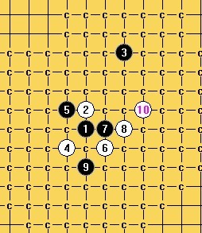
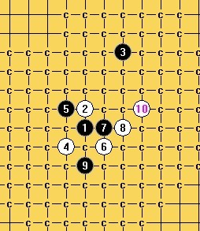

终结题习题一例:白先如何胜?
#1 终结题习题一例:白先如何胜? 作者：空恨社小仙 发表时间：2012-4-25 14:43:56
#2 Re:终结题习题一例:白先如何胜? 作者：山城刀客 发表时间：2012-4-26 9:29:33
a1和a2都是可以杀的，思路并不复杂，地毯起来比较繁琐。
首先拆的是a1，除了c1路稍微复杂些，其他均不难。
a2这一路杀要复杂些，不过思路是很明确的。
棋谱：
 大刀7的地毯.part01.rar
大刀7的地毯.part02.rar
大刀7的地毯.part03.rar
大刀7的地毯.part04.rar
大刀7的地毯.part05.rar
大刀7的地毯.part01.rar
大刀7的地毯.part02.rar
大刀7的地毯.part03.rar
大刀7的地毯.part04.rar
大刀7的地毯.part05.rar
［ 空恨社小仙 于 2012-4-26 11:51:21 时花20金币送鲜花一朵］
［ 一尘 于 2012-4-26 16:15:48 时奖励此帖[金币加 100 威望加1］
［ 郎情 于 2012-12-16 23:12:57 时花20金币送鲜花一朵］
［ 郎情 于 2012-12-16 23:12:57 时花20金币送鲜花一朵］
［ 郎情 于 2012-12-16 23:12:57 时花20金币送鲜花一朵］
［ 郎情 于 2012-12-16 23:12:57 时花20金币送鲜花一朵］
［ 郎情 于 2012-12-16 23:12:57 时花20金币送鲜花一朵］
［ 郎情 于 2012-12-16 23:12:57 时花20金币送鲜花一朵］
［ 郎情 于 2012-12-16 23:12:57 时花20金币送鲜花一朵］
［ 郎情 于 2012-12-16 23:12:57 时花20金币送鲜花一朵］
［ 郎情 于 2012-12-16 23:12:57 时花20金币送鲜花一朵］
［ 郎情 于 2012-12-16 23:12:57 时花20金币送鲜花一朵］
［ 郎情 于 2012-12-16 23:12:57 时花20金币送鲜花一朵］
［ 郎情 于 2012-12-16 23:12:57 时花20金币送鲜花一朵］
［ 郎情 于 2012-12-16 23:12:57 时花20金币送鲜花一朵］
［ 郎情 于 2012-12-16 23:12:57 时花20金币送鲜花一朵］
［ 郎情 于 2012-12-16 23:12:57 时花20金币送鲜花一朵］
#3 Re:山城刀客【==Re:终结题习题一例:白先如何胜?==】 作者：空恨社小仙 发表时间：2012-4-26 11:53:09
我就拆了你的a1,没拆a2,但我可以想象基本上两头活三都可胜出,刀客的思路和精神值得学习,赞一个~
#4 Re:空恨社小仙【==Re:山城刀客【==Re:终结题习题一例:白先如何胜?==】==】 作者：空恨社小仙 发表时间：2012-4-26 12:13:06
[
［此帖子已被 空恨社小仙 在 2012-4-26 12:14:31 编辑过］
［ 山城刀客 于 2012-4-26 18:13:15 时花20金币送鲜花一朵］
［ 山城刀客 于 2012-4-26 18:13:19 时花20金币送鲜花一朵］
#5 Re:终结题习题一例:白先如何胜? 作者：月光公主 发表时间：2012-4-26 16:00:18
用这个7复杂了，这里7简单些

［此帖子已被 月光公主 在 2012-4-26 16:01:02 编辑过］
［ 一尘 于 2012-4-26 16:14:56 时奖励此帖[金币加 100 威望加1］
［ 空恨社小仙 于 2012-4-26 17:34:28 时花20金币送鲜花一朵］
#6 Re:终结题习题一例:白先如何胜? 作者：没事摆石子玩 发表时间：2012-4-26 17:50:27
膜拜下你们这些地毯狂人
#7 Re:月光公主【==Re:终结题习题一例:白先如何胜?==】 作者：空恨社小仙 发表时间：2012-4-26 18:58:34
五楼太强大了,佩服啊,请问这个七是如何简单杀的?#8 Re:终结题习题一例:白先如何胜? 作者：山城刀客 发表时间：2012-4-26 19:46:22
这个8可以杀。
大妖刀7的地毯.rar
［ 空恨社小仙 于 2012-4-26 19:48:33 时花20金币送鲜花一朵］
#9 Re:山城刀客【==Re:终结题习题一例:白先如何胜?==】 作者：空恨社小仙 发表时间：2012-4-26 19:47:57
是啊,我知道可以杀出,但觉得也不是很简单,就是想看看五楼有没更巧妙的方法...
#10 Re:【==Re:终结题习题一例:白先如何胜?==】==】 作者：空恨社小仙 发表时间：2012-4-26 19:54:15
 又是不一样的杀...
又是不一样的杀...［此帖子已被 空恨社小仙 在 2012-4-26 19:55:03 编辑过］
#11 Re:空恨社小仙【==Re:【==Re:终结题习题一例:白先如何胜?==】==】==】 作者：逆刃 发表时间：2012-4-26 20:04:55
败7简单杀.rar
［ 空恨社小仙 于 2012-4-26 20:44:15 时花20金币送鲜花一朵］
［ 空恨社小仙 于 2012-4-26 20:45:41 时花20金币送鲜花一朵］
#12 Re:终结题习题一例:白先如何胜? 作者：自来水 发表时间：2012-4-26 20:17:16
。。
［ 空恨社小仙 于 2012-4-26 20:45:28 时花20金币送鲜花一朵］
#13 Re:逆刃【==Re:空恨社小仙【==Re:【==Re:终结题习题一例:白先如何胜?==】==】==】==】 作者：空恨社小仙 发表时间：2012-4-26 20:45:09
太妙了,真乃高手高手高高手也......#14 Re:终结题习题一例:白先如何胜? 作者：月光公主 发表时间：2012-4-27 8:33:25
这个8方法简单

［ 空恨社小仙 于 2012-4-27 14:22:11 时花20金币送鲜花一朵］